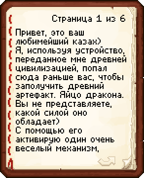
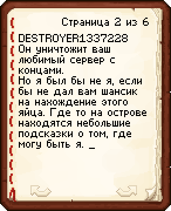
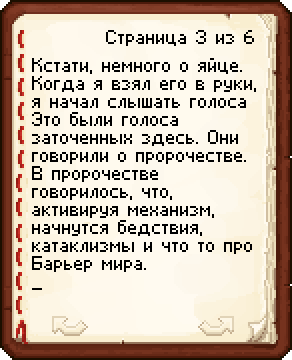
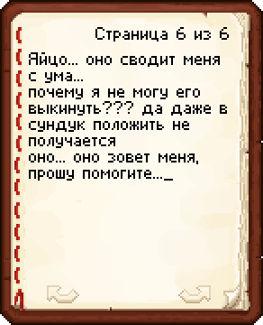

V Сюжет сервера "CandyLands" V
На этой странице написано только то, что известно на данный момент:
09.03.24
в 18:00 Открываеться Энд, дракона нету, яйца тоже, но есть сундук в котором лежит книга в которой написано следуещее:
   